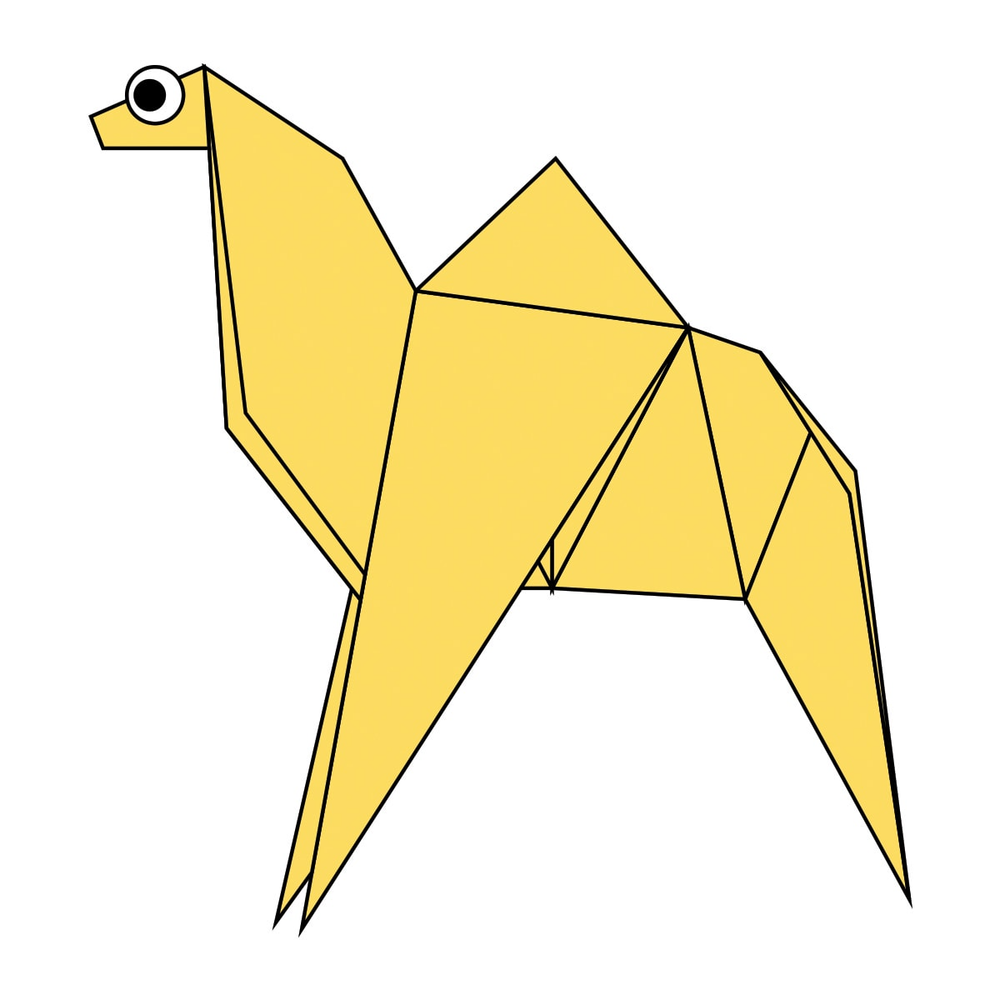
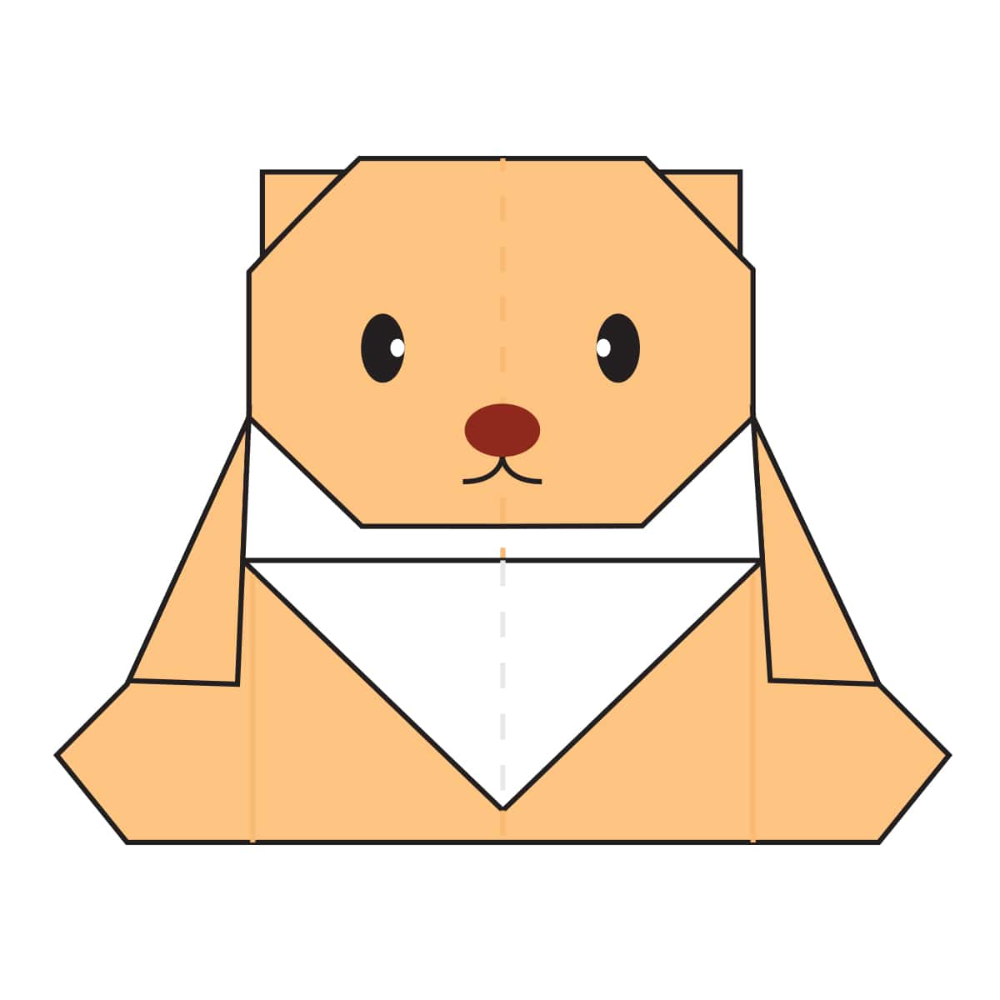
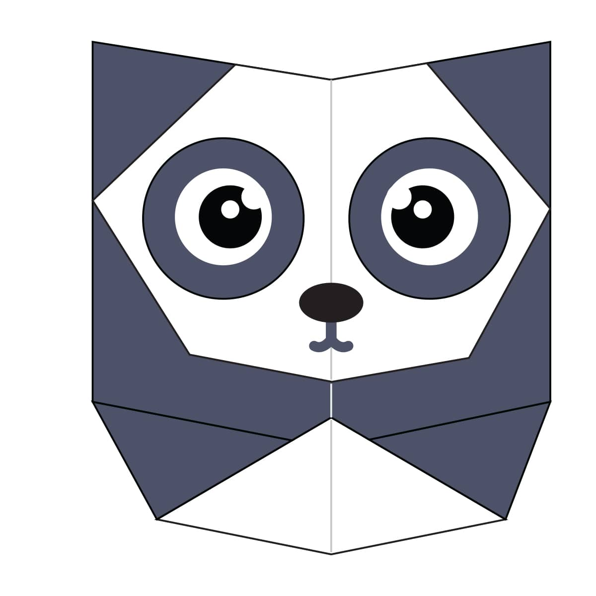

Origami Designs
about us
follow us

interesting facts about Chameleon-
- *Chameleons are reptiles that are part of the iguana suborder
- *changing skin colour is an important part of communication among chameleon
- *most of chameleon have a prehensile tale that they used to wrap around tree branches

interesting facts about pigeon -
- *Pigeons are incredibly Complex and intelligent animals
- *Pigeons are renowned for their outstanding navigational abilities
- *Pigeons have excellent hearing abilities

interesting facts about cicada -
* Cicadas can survive a huge fall as babies, or nymphs.
They are about the size of a grain of rice when they drop from a tree branch to the ground and start digging.
* They're true bugs (from the order Hemiptera).
So you can call them a bug and be scientifically accurate.
*Females may be attracted to the sound of motors.
So you get to watch your dad, mom or older sibling get swarmed while they're using the lawn mower or power tools.

Interesting facts about cicada -
*Camels have three sets of eyelids and two rows of eyelashes to keep sand out of their eyes.
*Camels have thick lips which let them forage for thorny plants other animals can’t eat.
*Camels can completely shut their nostrils during sandstorms.

Interesting facts about teddy bear-
*The incident of Roosevelt sparing the bear led to the popularity and naming of Teddy bears.
*In Southey's original story, the visitor to the bears' house was an ugly old woman. Goldilocks only entered the tale in later versions.
*The Oxford English Dictionary dates the first use of the term teddy bear to 1906.

Interesting facts about Panda-
*Giant pandas are good at climbing trees and can also swim.
*Pandas are "lazy" eating and sleeping make their day.
*An adult can eat 12-38 kilos of bamboo per day!